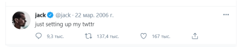

dArtFlex
is The First CrossChain AI NFT Marketplace
is The First CrossChain AI NFT Marketplace
The NFT sector is thriving, 2021 can be marked as the year of NFT.
The top sales on the market go beyond all charts.
The more is yet to come...
The legendary CryptoPunks Alien punks hit more than
$7 million
Back to 2006 when Jack Dorsey made his first tweet he couldn't predict that one day it will be sold for $2.9 Million
Beeple became a sign of the golden start of the NFT
era selling his arts for $70 millions
“If UNI ever goes to $11, which is not totally unreasonable, Paradigm's <$5 million investment could be worth more than a billion. I remember some people laughed at Paradigm for funding Uniswap in early 2019. Crazy”
As we know for today it’s far gone from the predicted $11.
DeFi and NFT are closely tied together.
NFT can be shortly described as an ownership stamp that is written in
the blockchain while DeFi is the financial tool operating along the blockchain.
Well known as Rarible, referred to as Decentralized exchange for
NFTs, Aavegotchi is another good example.
AI is also getting more and more involved in NFT.
Sophia the Robot Hong Kong-based Hanson Robotics humanoid collaborated with
@andreabonac_art to create her first NFT which was successfully sold for nearly 700,000$
Introducing dArtFlex — a marketplace of the new reality.
We aim to bring together talents of creators and possibilities of AI to create an unique, non-fungible art.
Core features of the
platform include:
Artists + NFT + AI
Subscribe for updates